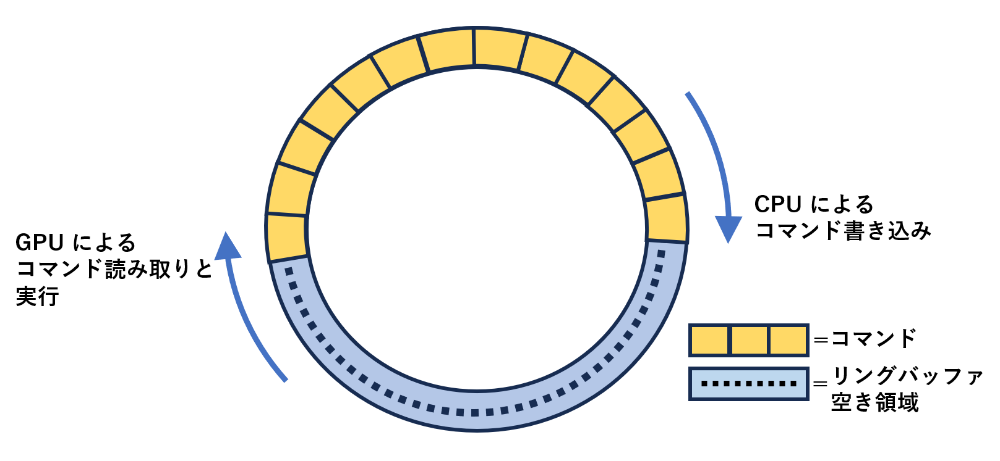
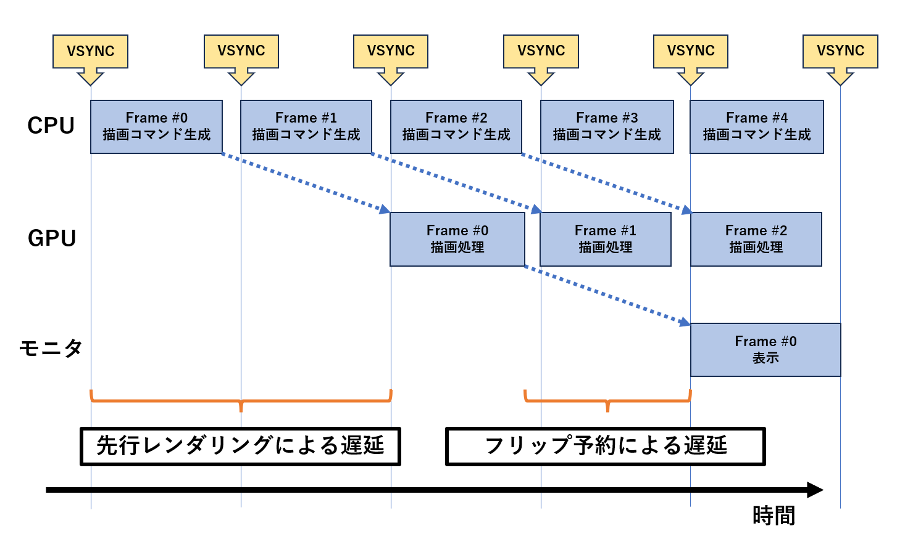

ゲームの VSYNC に関連する問題とその対策
VSYNC は、ゲーム機などの映像出力機器とモニタの表示タイミングを合わせることで、映像の乱れを防ぎ、ガクつきのない安定した画面更新を可能にする仕組みです。 本文書では、ゲームの VSYNC に関する話をまとめます。 VSYNC とその背後で動作する CPU と GPU の関係について解説したのち、 VSYNC に関連する解決が必要な問題とその対策、 および Windows 環境に置ける VSYNC 処理のベストプラクティスを考えます。入力遅延問題にフォーカスした内容は、 こちらの文書 でもまとめていますので、興味のある方はご参照ください。
注）2001/08/15 時点の記事をもとに加筆修正し 2025/02/09 時点の状況を反映させた内容となっています。 現状と合致しない可能性があります。
ゲーム機などの映像はどうやってモニタに送信され表示されるのか
- 走査線（ラスター）
-
画像がモニタに送られ表示される仕組みを説明するには、
ブラウン管モニタの時代から存在する概念について解説する必要があります。
ブラウン管のモニタは、 モニタ奥側からモニタ表面の蛍光体に対して電子ビームを発射し、 発光させることで画像を表示します。 電子ビームの発射先は画面左上端から始まり、モニタ表面を右方向に移動していきます。 発射先が右端に到達すると、1 ライン下の左端に戻り、再び右方向に移動していきます。 これを画面下端に到達するまで繰り返すことで画面全体を発光させます。
この、電子ビームが画面上を進むことを「走査」、 横方向のラインを「走査線」または「ラスター」と呼びます。

走査線の振る舞い。
矢印は電子ビームの軌跡を示す。
- 垂直同期信号と水平同期信号
-
ブラウン管モニタでは、
映像をモニタに送信する側（TVのアナログ放送局やゲーム機本体など）は、
走査線の動きと同期するよう 1 ラインずつ映像信号を送信します。
この映像信号の中には、
「垂直同期信号」および「水平同期信号」と呼ばれる同期制御用の信号が含まれています。
垂直同期信号は走査線の垂直方向の同期制御に、 水平同期信号は走査線の水平方向の同期制御に使われます。 モニタ側はこの同期信号を利用して、映像信号の開始位置を検出し、 映像送信側と走査線の移動タイミングを正確に合わせています。
- 垂直帰線期間
-
走査線が画面下端に到達し、再び最初の位置に戻る際に、タイムラグがあります。
これを「垂直帰線期間」と呼びます。
垂直帰線期間は、VBLANK と呼ぶこともあります。
垂直帰線期間中は、画面を書き換えても表示結果に影響しません。
見えてしまっては困る様々な処理は、垂直帰線期間中に行われます。
- VSYNC と HSYNC
-
垂直同期信号とタイミングを合わせることを「VSYNC」、
水平同期信号とタイミングを合わせることを「HSYNC」と呼びます。
このようなブラウン管モニタ時代の名残は、 DVI や HDMI などの後の世代にも引き継がれており、 デジタル化された映像情報の中に垂直同期信号と水平同期信号に相当するものが埋め込まれています。 したがって、VSYNC と HSYNC のような概念は引き続き存在します。 しかしその後、高解像度モニタの出現に伴い、 映像信号を圧縮送信する手法が採用されるようになりました。 圧縮を利用する場合、 効率を高めるため画像は2次元的な小さなブロック単位で扱われるため、 もはや走査線のような概念はなくなりつつあります。 VSYNC の概念は引き続き残っていますが、HSYNC をどういう意味で捉えるかは実装依存です。
フレームバッファのバッファリングとフリップ
- フレームバッファ
-
「フレーム」とは、映像を構成する一枚一枚の画像のことです。
このような画像をコンピュータ上で保持するメモリ領域のことを、
「フレームバッファ」と呼びます。
- VSYNC フリップと HSYNC フリップ
-
フレームバッファ上にゲーム画面を描画する処理は、とても時間がかかります。
描画中の中途半端な状態の画面が表示されてしまうことは避けなければいけません。
そのためゲームの画面は通常、モニタに表示されていないフレームバッファ領域に対して描画し、
描画が完了した後に、そのフレームバッファ領域を表示対象に切り替えるという方法で更新していきます。
この切り替えのことを「フリップ」と呼びます。フリップは一瞬で完了します。
垂直同期信号と合わせてフリップを行うことを「VSYNC フリップ」、 水平同期信号と合わせてフリップを行うことを「HSYNC フリップ」と呼びます。
- ダブルバッファ
-
フレームバッファを、
表示用と描画用の 2 画面用意し、
交互に切り替えながら更新していく方法を「ダブルバッファ」と呼びます。
- トリプルバッファ
-
フレームバッファを、
表示用と描画用の 2 画面に加え、予備用の 1 画面を用意した合計 3 画面構成とし、
順番に切り替えながら更新していく方法を「トリプルバッファ」と呼びます。
- ダブルバッファ と トリプルバッファ の違い
-
ダブルバッファの場合、
表示用と描画用のフレームバッファの交換を VSYNC フリップで行うと、
フリップが完了するまでの期間、次のフレームの描画を開始することはできません。
一方トリプルバッファの場合は、
VSYNC を待っている間も、
予備のフレームバッファに対して次のフレームの描画を進めることができ、時間を有効活用することができます。
リフレッシュレートとフレームレート
- リフレッシュレート
-
1 秒間にモニタの画面が更新される回数（= 走査線が上から下まで一巡する回数）を「リフレッシュレート」と呼びます。
単位は Hz です。
リフレッシュレートはモニタのスペックによって異なります。
大抵のモニタは、最も基本的なリフレッシュレートである 60Hz モードをサポートしています。
ゲーミングモニタなどでは、もっと高いリフレッシュレートをサポートしていたり、
リフレッシュレートをモニタの可変範囲内で任意に変動させることが可能な可変リフレッシュレートと呼ばれる機能を
サポートしている場合があります。
- フレームレート
-
1 秒間にゲーム画面が更新される回数を「フレームレート」と呼びます。
秒間フレーム数を意味する frame per second の頭文字をとって、
fps と言う単位が使われます。
- 「フレームレート ＝ リフレッシュレート」の状態を維持できることが理想
-
フレームレートとリフレッシュレートが一致しているとき、
モニタに表示される映像は安定したスムースな見た目となります。
通常、ゲームの処理はリフレッシュレート以上の速度が出せるように余裕を持たせておき、
かつフレームレートがリフレッシュレートを越えないよう、
制限をかけながら処理を進めます。
フレームレートとリフレッシュレートが一致しなくなると何が起きるか
ゲーム側の処理が重くなるなどの理由で「フレームレート ＝ リフレッシュレート」の状態が維持できなくなると、 ゲームの映像がガクついた不安定な見た目になります。- スタッタリング
-
VSYNC フリップを行っている時に、「フレームレート ＜ リフレッシュレート」の状況が発生すると、
同一の画像を連続表示するフレームが不規則に割り込んだような、
ガクガクとした見た目の映像になります。
これを「スタッタリング（stuttering）」と呼びます。
処理が重くなると、動作がガクガクになる。
一方で、ダブルバッファ利用時は、 60fps のゲームが 30fps に急激に落ちて安定 30fps 動作するといったように、 突然スローがかかったような挙動になります。 このケースは、先ほどの例とは区別するためスタッタリングとは呼ばず、 単にフレームレートを明示して「30fps に落ちる」と表現したり、 何 VSYNC おきの動作になっているかを明示して「2V 動作になる」のように表現することが多いです。
初代アーケード版グラディウス（KONAMI 1985）
処理が重くなると、60fps から 30fps まで一気に低下する。
- ティアリング
-
HSYNC フリップによる画面切り替えを行うと、
HSYNC フリップが行われたラスタ位置を境に、
画面がズレたような映像が出力されます。
これを、「ティアリング（tearing）」と呼びます。
ティアリングは、「引き裂く」を意味する語です。
.jpg)
典型的なティアリング発生の様子。
Tear Point と書かれた位置で、絵がズレている。
（画像は wikipedia から抜粋 CC BY-SA 3.0 ）
昨今のゲームでは、 「フレームレート ＝ リフレッシュレート」の状態が維持できる時は VSYNC フリップを行い、 「フレームレート ＜ リフレッシュレート」の状況が発生する時は HSYNC フリップを行う、 というように動的にフリップ手法を切り替える実装が多くなっています。 このようなゲームにおいて、上記のようなティアリング発生を観察することができます。
- 可変リフレッシュレート対応モニタの場合はティアリングが発生しない（場合がある）
-
可変リフレッシュレートモニタは、
そのモニタがサポートする可変範囲内の任意のリフレッシュレートで画面フリップが可能です。
これは言い換えると、VSYNC に縛られない画面フリップが可能ということであり、
「可変範囲内であれば、HSYNC フリップを行ってもティアリングが発生しない。」
ということになります。
したがって、ティアリングを完全に解消できるわけではありませんが、多くの場合で軽減することが可能です。
CPU と GPU と VSYNC および表示遅延の関係
ここまでは、 映像出力部に限定した VSYNC の話でした。 さらに掘り下げて、VSYNC と、その背後で動作する CPU と GPU の関係を見ていきます。- CPU から GPU への描画命令はコマンドバッファ経由で伝えられる
-
CPU は描画命令をコマンド列として発行し、GPU はそれを読み取り実行しています。
コマンド列は、CPU と GPU の双方から読めるコマンドバッファ上に書き込まれます。
コマンドバッファは、通常リングバッファ構造になっています。

コマンドバッファの概念図
※説明の都合上ものすごく簡略化しています
- CPU からのフリップ要求も描画命令の一環としてコマンドバッファ経由で GPU に伝えられる
-
CPU からのフリップ要求は、フリップコマンドとしてコマンドバッファに書き込まれます。
GPU は描画命令の一環としてこれを読み取り、フリップを実行します。
- GPU はフリップ命令を見つけると直ちにフリップするのではなくフリップを予約する
-
GPU がコマンドバッファ上のフリップコマンドを実行する状況を考えます。
VSYNC フリップが要求されている場合、フリップを実行するため次の垂直帰線期間までまつ必要があります。
この待ち時間の間、GPU が何も他の処理を実行できなくなってしまうのは良くありません。
そこで一般的に、GPU はフリップの予約だけを行い、直ちに次のコマンドの実行に取りかかることで、
時間を有効活用しています。
- GPU から予約されたフリップは VSYNC などの適切なタイミングで実行される
-
GPU から予約されたフリップは、
FIFO 構造の簡単なキューに書き込まれます。
そして、VSYNC や HSYNC などの指定の同期方法に従い、
フリップ可能なタイミングが来たときにフリップが実行されます。
- フリップが何件まで予約されるかは実装依存である
-
前述のダブルバッファの場合は、
現在表示中の絵とは別に次回表示予定の絵が 1 件フリップ予約できます。
トリプルバッファの場合は、
ここに予備のフレームバッファが追加されるので、1 件増えて 2 件のフリップが予約できます。
ただし実際は、フレームバッファが何面存在して、フリップが何件まで予約されるかは実装依存です。 一般に PC 環境の場合は、 フリップ処理の詳細が OS や GPU ドライバの管理下にあり、 アプリケーションプログラムから制御できません。
一般的な PC 環境では、OS はゲーム実行中も様々な他の処理をこなさなければならず、 ゲームのフレームレートを安定させることが難しい場合があります。 この問題に対処するため、 GPU ドライバは普段からなるべく多くのフリップを予約状態として貯めこんでおき、 急な割り込み処理によりゲームの描画処理に専念できない瞬間が発生した時は、 貯めこんだフリップ予約を実行していくことで、 見かけ上ゲームのフレームレートを安定化させています。
- 先行レンダリング
-
CPU から GPU へリクエストされた描画命令は、
すぐにはコマンドバッファに書き出されず、
ある程度貯めこんでから実際に書き出される場合があります。
これは GPU のドライバ層の最適化機能による挙動です。
GPU ドライバ層は、CPU からのリクエストに含まれる冗長な処理
（すでに設定済みのステートを何度も再設定する等々）
を取り除き、
必要最小限のコマンド列にしてからコマンドバッファに書き出す場合があります。
なるべく多くのコマンドを貯めこんでから最適化することにより効率を高めようとしています。
また、CPU の各フレームの処理負荷は一定ではありません。 あるフレームでスパイク状に大きな CPU 負荷が生じた時、 CPU から GPU への描画コマンド供給が止まり、 GPU は何も処理を実行できない待ち状態が発生します。 この問題に対処するため、一般に CPU のコマンド列は GPU に対してある程度先行して生成しておき、 急激な CPU 負荷上昇が発生した時には先行生成したコマンド列を GPU に実行させることにより GPU に無駄な待ち時間が発生することを回避し、スループットを高めています。
このように、 CPU が GPU に対して先行して描画コマンドを生成することを、 「先行レンダリング」と呼びます。
- 表示遅延
-
フリップ予約や先行レンダリングのような仕組みは、
ゲームの画面更新を安定させたり、
GPU 処理のスループットを高める効果があります。
しかし一方で、
CPU がリクエストした描画処理が即座に GPU に伝えられなかったり、
GPU が描き終わった絵が直ちにモニタに表示されないことになります。
これを「表示遅延」と呼びます。
表示遅延の増大は、ゲームの操作性を著しく低下させるため、
近年問題となっています。
詳しくは
こちらの文書
でまとめています。
HSYNC フリップの場合は、GPU 側で待たされることが無いので、表示遅延の観点ではさほど問題にはなりません。 問題は VSYNC フリップの方で、 直ちにフリップができないため、フリップ予約が蓄積していきます。 そしてついに 「遅延 ＝ 先行レンダリングフレーム数 ＋ フリップの最大予約数」 のような状態になります。 次の図は、遅延が最大まで蓄積した状態を示します。
 一般に PC 環境の場合は、 先行レンダリングフレーム数やフリップ予約件数上限は OS の管理下にあり簡単には制御できません。 しかし昨今では一般 PC でも遅延対策としてこれらを削減する手段が API レベルで提供されていることがあります。
先行レンダリングとフリップ予約による遅延のタイムチャート
ゲーム内 Δt と VSYNC の関係
ここでは、ゲームプログラム内の時間管理方式と、VSYNC に関連する問題について触れます。- 「Δt」＝ 1 フレームにかかる CPU の処理時間
-
ゲームの 1 フレームにかかる CPU の処理時間を、この文書では「Δt」と呼ぶことにします。
Δt はフレームレートの逆数です。
- Δt 固定のゲーム
-
Δt を 1/60秒 などの特定の値で固定するような実装を「Δt 固定」と表現します。
Δt 固定実装のゲームは、処理負荷が上昇するなどしてフレームレートが低下すると、ゲームの進行速度が低下します。
- Δt 可変のゲーム
-
Δt を 1/60秒 などの特定の値で固定せず、
直前のフレームの処理時間の実測値などから決定するような実装を「Δt 可変」と表現します。
Δt 可変実装のゲームは、処理負荷が上昇するなどしてフレームレートが低下した場合でも、
ゲーム内の時間の進行を一定に保つことができます。
Δt 可変実装のゲームでは、 ゲーム内のキャラクタの移動処理は、以下のように常に Δt を考慮することで行います。x,y : キャラクタ座標 vx,vy : キャラクタ移動速度 x = x + vx * Δt y = y + vy * Δt
- Δt 可変実装が主流になっている
-
昔のゲームは、
アーケードゲームの筐体や
専用の PC 用モニタや
一般的な家庭用モニタなどに接続することを前提として設計されていました。
接続されるモニタのリフレッシュレートや CPU/GPU のスペックが固定されていたため、
その制約内で安定したフレームレートを達成できるように調整されていました。
この世代のゲームでは、Δt 固定実装が主流でした。
一方、 昨今のゲーミング環境では、 モニタのリフレッシュレートは環境によって異なり、 特に PC ではそのバリエーションが多いです。 可変リフレッシュレート対応モニタも存在するため、 ゲームのフレームレートも可変であることが求められます。 また、CPU/GPU のスペックも環境によって様々であり、 1 フレームにかかる処理時間は予想が困難です。 このような状況に対応するには、Δt 可変実装にする必要があり、現在の主流となっています。
- Δt 可変実装が主流になったことが遠因となり VSYNC が信用できない状況が発生している
-
昨今のゲームが Δt 可変実装が主流になった結果、
それを前提とした GPU ドライバ設定をユーザーが利用することが増えてきました。
これが遠因となり、
Δt 固定実装のゲームが問題を起こすケースが発生しています。
詳しくは、「VSYNC 強制 OFF 問題」として後述します。
VSYNC 強制 OFF 問題
Windows などの PC 環境では、GPU の環境設定などにより、フリップ時の同期方法をユーザーが変更することが可能です。 ゲームプログラム側に特に大きな影響を及ぼすのが、VSYNC 強制 OFF 設定です。- VSYNC 強制 OFF 設定
-
PC 環境では、GPU の環境設定などにより VSYNC を強制 OFF に設定することが可能です。
VSYNC を強制 OFF に設定している状態で、
ゲームプログラム側が VSYNC フリップを要求してくると、
GPU ドライバはこれを HSYNC フリップに置き換えて実行します。
- VSYNC を OFF にすると遅延削減効果があるがティアリングが発生する
-
VSYNC フリップは、前述のとおりフリップ予約が蓄積するので、表示遅延が増大します。
VSYNC を OFF にすることで、これを解消することができます。
ただし、VSYNC フリップが HSYNC フリップに切り替わると、
副作用としてティアリングが発生します。
VSYNC 強制 OFF は、
ティアリングなどにより画面が乱れても良いので低遅延化を優先したい
という需要を想定した機能です。
可変リフレッシュレート対応のモニタではティアリング発生を軽減できますが、 VSYNC 強制 OFF の状況下ではリフレッシュレート可変範囲の上限を越えるフレームレートのフリップが発生しやすく、 ティアリングを消せるとは限りません。 したがって、 「VSYNC 強制 OFF にしても可変リフレッシュレート対応のモニタなら大丈夫だ」 とは一概には言えないので注意が必要です。
- VSYNC を OFF にすると Δt 固定実装のゲームが早回しになる
-
Δt 固定実装のゲームは、
ゲームの進行速度を VSYNC で制御するのが一般的です。
このようなゲームプログラムは、
VSYNC フリップが利用できることを前提として動作しています。
VSYNC を OFF にするとゲームの進行速度を一定に保てなくなり、
早回しになりプレイ不能になるなどの問題が発生します。
- GPU ベンダは VSYNC 強制 OFF による副作用を十分に説明していない
-
VSYNC を強制 OFF にすると、様々な副作用が生じます。
しかし、このことについて GPU ベンダは十分な説明を行っていません。

「オフ」の項に、ティアリングについては言及があるが
それ以外については「低遅延」「高パフォーマンス」と、
良い事尽くめのような文言が並んでいる。
VSYNC に依存したゲームの進行速度が変わってしまうという
致命的影響については一切言及されていない。
GPU ベンダのエンジニア達がこのような副作用を予測できないはずはないので、 VSYNC 強制 OFF にして副作用があったとしても「ユーザー責として処理すればよい」というポリシーが採用されているものと考えられます。
通常、OS やゲーム機のプラットフォームホルダの立場では、 そのプラットフォーム上で動作するゲームやアプリケーションの挙動を破壊するような変更は、 たとえユーザー責にできるとしてもよほどの事情がない限り提供しないのが普通です。 しかし GPU ベンダはプラットフォームホルダとは立場が異なるため、このような機能を躊躇することなく提供してきます。
- 全ゲーム VSYNC 強制 OFF に設定しているユーザーが増えている
-
GPU ベンダの不十分な説明を鵜呑みにした結果、
副作用を十分に理解しないまま VSYNC 強制 OFF を選択するユーザーが増えています。
VSYNC の設定はゲームごとに可能なのですが、
設定が煩雑ということもあり、
全ゲーム VSYNC 強制 OFF に設定しているユーザーが一定数います。
- VSYNC 強制 OFF 対策を入れていないとゲーム側の不具合と認識される
-
前述のとおり、全ゲーム VSYNC 強制 OFF に設定しているユーザーが増えており、
無関係のゲームの多くが巻き添えで VSYNC 強制 OFF に設定されています。
ゲームデベロッパ側からすると、
VSYNC 強制 OFF 対策を入れずにゲームをリリースすることは不可能な状況となってしまいました。
むしろ対策を入れていないとゲーム側の不具合と認識される状況にまで至っています。
VSYNC 強制 OFF したことによりゲームの動作に不具合が発生した場合、 責任はそのような設定を行ったユーザーにある、というのが GPU ベンダの当初の立場だったと考えられますが、 実際にはユーザーの責任ではなく、 ゲームデベロッパ側の責任と見なされる状況になってしまっています。
- Δt 固定実装のゲームを Δt 可変実装に修正することはとても難しい
-
VSYNC 強制 OFF で影響を受けるのは、Δt 固定実装のゲームです。
単純に考えれば、このようなゲームの実装を Δt 可変に書き換えれば、
問題は解決するように思えます。
しかし、それはとても大変なことです。
Δt 固定実装のゲームを Δt 可変実装に書き換えるには、 膨大な量のプログラムコードの変更が必要です。 それだけではありません。 仮に膨大な変更を行い Δt 可変実装に変更できたとしても、 元の挙動と完全一致させることができないため、 様々な問題が発生します。 物理シミュレーションを利用したゲームの場合、 Δt の間隔が変化するだけでもシミュレーション誤差の生じ方が変わり挙動が変化します。 最悪の場合、挙動の変化が原因でゲームの特定のシーンがクリア不能になるなどの進行不能バグに発展する恐れがあります。
このような事情から、 Δt 固定実装のゲームの VSYNC 強制 OFF 対策は、Δt 可変実装に変更にするのではなく、 VSYNC が取れない状況でも他の手段で Δt を一定に保つ事で行うのが一般的です。
- VSYNC 強制 OFF になっていることをゲーム側で確実に検出することは難しい
-
ゲーム側で VSYNC 強制 OFF 対策が求められることはわかりましたが、
VSYNC 強制 OFF を検出する直接的な方法が存在しません。
VSYNC 強制 OFF になっていると、GPU のドライバはゲーム側に「VSYNC フリップが成功した」という戻り値を返しながら
実際には VSYNC しないというように、動作を詐称してきます。
ゲーム側は API などでその旨を直接検出することはできません。
ゲーム側でフレームレートを計測することにより、間接的に VSYNC 強制 OFF を検出することは可能です。 しかしこれは単純な話ではありません。 VSYNC 強制 OFF を検出できるまで、ある程度のフレーム数ゲームが進行してしまうのは厄介です。 確実に検出するには、 ゲーム起動時などにゲームの進行を止めて数秒程度の空フリップを行いフレームレートを計測する必要がありますが、 ユーザビリティが犠牲になりますし、ゲーム起動後に VSYNC 強制 OFF するような回避手法には対応できません。
- VSYNC 強制 OFF 対策の現実的な妥協案
-
VSYNC フリップを必要とする Δt 固定実装のゲームは、
妥協案として以下のような VSYNC 強制 OFF 対策を取ることが一般的です。
主要なゲームエンジンでもこの実装を採用しています。
- VSYNC が利用できるかどうかは不明だが VSYNC フリップを実行する
-
VSYNC 強制 OFF されている可能性があり、
機能するかは不明ですが、
VSYNC フリップを実行しておきます。
- Δt を VSYNC の間隔よりわずかに短く保つ
-
OS 組み込みの時間計測 API などを利用し、
Δt が小さくなりすぎないように CPU 処理に wait を入れます。
ただし、Δt を VSYNC の間隔にピッタリと合わせてしまうと、
VSYNC フリップにギリギリ間に合わないフレームが発生し
スタッタリングを起こす可能性があるので、
Δt は VSYNC の間隔よりわずかに短く保つようにします。
- VSYNC 強制 OFF 対策がもたらす長周期の遅延変動
-
前述の VSYNC 強制 OFF 対策ですが、厄介な問題があります。
VSYNC が取れる場合でも取れない場合でも Δt は一定に保たれましたが、
遅延特性に目を向けると両者に大きな差異があります。
VSYNC が取れる場合、Δt が VSYNC 間隔より少し短く保たれています。 その結果、CPU は GPU よりも少しずつ先行していき、フリップ予約を貯めこんで行きます。 フリップ予約が上限に達すると、 CPU 側は次の VSYNC まで新たなフリップ予約が出来なくなり、 予約可能になるまで待たされます。 この待ち時間により、 CPU は同期（※ OS 組み込みの時間計測 API を使った等間隔の同期ポイント）を 1 回分逃すため、GPU に対する先行は 1 フレーム分巻き戻されます。 結果的に、ゲームの時間経過に伴い、 数十秒などの長い時間をかけて表示遅延が少ない期間から表示遅延が大きい期間に移行し、 表示遅延が最大になると遅延が 1 フレーム短縮され、再び時間をかけて増大していく、 という長周期の遅延変動を繰り返す動作となります。
繰り返しになりますが、 主要なゲームエンジンでもこの実装を採用しているため、 同様の現象が発生しています。 格闘ゲームでも良く利用されるようなゲームエンジンで、 このような長周期の遅延変動が発生してしまうことは、 大きな問題です。
この長周期の遅延変動現象は、VSYNC のフリップ予約が原因で発生しているので、 VSYNC 強制 OFF にすることで回避可能です。 そもそも VSYNC 強制 OFF にするユーザーが多いことが原因で起きた問題なのに、 それを回避するために VSYNC 強制 OFF にしなければならないという、 脱出困難なスパイラルにはまり込んでいます。
- VSYNC 強制 OFF 対策として Δt 下限を設定することは CPU と GPU の非同期動作を阻害する
-
本来 CPU と GPU は非同期動作が可能で、
この仕組みはフレームレート安定化に貢献しています。
遅延が許容できるケースでは、先行レンダリングにより、
急激な処理時間の増大が起きた場合でもゲーム画面のガクつきを回避する「緩衝作用」が期待できます。
しかし、
VSYNC 強制 OFF 対策のため、
CPU 処理の Δt が VSYNC 間隔以下にならないように制限してしまうと、
CPU が GPU に対して先行出来なくなり、この「緩衝作用」は機能しなくなってしまいます。
「緩衝作用」を期待するか低遅延を期待するかは、本来はゲーム側で選択可能だったのですが、
それが VSYNC 強制 OFF 対策の結果、不可能になってしまいます。
- VSYNC 強制 OFF は開けてはいけないパンドラの箱だった
-
ここまでで触れたとおり、
VSYNC 強制 OFF 設定がもたらした混乱はすさまじく根が深いです。
というかもう、めちゃくちゃです。
本来、VSYNC の手法はゲームプログラム側でコントロールするものです。 これをユーザーの選択肢として解放してしまったことが、そもそもの間違いです。 しかし一度発生してしまった混乱は、もとに巻き戻すことはできません。
- VSYNC 強制 OFF の必要性は低下しつつある
-
VSYNC 強制 OFF が多くの問題をもたらすにも関わらず広く行われるようになった背景には、
低遅延なゲームプレイ環境が求められているにも関わらず、
Microsoft が長らくこの問題に対して良い解決方法を提示して来なかったことがあります。
しかし現在では、DirectX12 の更新で遅延対策が導入され、 VSYNC フリップを行いながらも HSYNC フリップと同様の低遅延を実現することも可能になっています。 このことは、VSYNC 強制 OFF の必要性自体が下がったことを意味します。 ゲームプログラム側がもっと攻めた処理を実装することを許容するためにも、 ユーザー側で VSYNC の挙動を変更することは避けた方が良いでしょう。
HSYNC フリップ時はティアリング発生位置を安定化させる配慮が必要
VSYNC が強制 off されていたり、 モニタが期待するリフレッシュレートをサポートしていない等々の理由で、 VSYNC が利用できない場合があります。 このような状況で Δt を固定したい場合は、HSYNC フリップを利用しつつ、 OS 組み込みの時間計測 API などを使い CPU に wait を入れることで、 ゲームのフレームレートを一定に保つ必要があります。 ここで注意が必要なのが HSYNC フリップのティアリング発生位置です。- HSYNC フリップ時のティアリング発生位置が安定しないと画面が非常に見づらくなる
-
HSYNC フリップ時のティアリング発生位置がフレーム単位で大きく変動すると、
すさまじい画面の乱れが発生します。
以下は最悪ケースを図示したものです。
ティアリング発生の最悪ケースその 1。
連続した 2 フレームの表示結果を示す。
図で示した範囲において、フレーム #n+1 の表示が完全にスキップされている。

ティアリング発生の最悪ケースその 2。
図で示した範囲において、フレーム #n+3 が 2 回連続表示されている。
- HSYNC フリップ要求のタイミングには配慮が必要
-
以下は、ナイーブなゲーム処理ループの実装です。
HSYNC フリップ要求は VSYNC フリップ要求と異なり予約状態に入らないので、 フリップコマンドは GPU に読み取られると直ちに実行されます。 従ってこのような実装では、 各フレームの GPU の描画処理時間の変動がティアリング発生位置にダイレクトに影響してしまい、 前述の最悪ケースのような挙動となってしまいます。while (ゲーム続行中) { フレームレートを一定に保つための wait ゲーム処理 & 描画コマンド生成 HSYNC フリップ要求 }
HSYNC フリップ要求のタイミングは、 ティアリング発生位置をフレーム単位で大きく変動させないよう、配慮が必要です。 次のコードは、簡単な対策を入れたバージョンです。
単に wait の位置が変わっただけですが、 これにより wait と HSYNC フリップ要求の間に時間が大きく変動する処理が割り込まなくなり、 ティアリング発生位置が暴れなくなります。 しかしこれでは、常に 1 フレーム前の絵をフリップして表示することになるので、 表示遅延が発生します。while (ゲーム続行中) { フレームレートを一定に保つための wait HSYNC フリップ要求 ゲーム処理 & 描画コマンド生成 }
さらに一工夫して、表示遅延にも配慮しつつティアリング発生位置も安定化させると、 次のコードのような実装になります。
「ティアリング発生位置を暴れさせないための wait」は、 直前に実行した HSYNC フリップ要求から、 VSYNC 間隔の 95% 程度の時間が最低でも経過するまで待つような処理です。 これにより、ティアリング発生位置が安定していて、 かつゲーム処理が軽いときは次第に低遅延になるように、 HSYNC フリップ位置が徐々に変動していくような動作となります。 具体的には、次の図のようになります。while (ゲーム続行中) { ティアリング発生位置を暴れさせないための wait HSYNC フリップ要求 フレームレートを一定に保つための wait ゲーム処理 & 描画コマンド生成 }

フレーム #n+1 の描画が完了した瞬間の状態。
今すぐ HSYNC フリップしてしまうと、
フレーム #n+1 の表示が大部分スキップされてしまう。

今回の HSYNC フリップ発生位置が前回から大きく変動しないよう、
wait を入れたのちにフリップを実行した結果を示す。
フレーム #n+1 の表示スキップ範囲は最小化された。
Windows 環境の低遅延 VSYNC フリップ
Windows 環境は、 DirectX12 の更新により低遅延 VSYNC フリップの仕組みが提供されるようになりました。- DirectX12 の低遅延 VSYNC フリップの仕組み
-
DirectX12 の低遅延 VSYNC フリップは、
FrameLatencyWaitableObject と呼ばれるセマフォを使ったシンプルな仕組みで提供されます。
このセマフォは、
CPU からリクエストされたフリップ要求が GPU に実行されず保留状態になっている件数をカウントするものです。
このセマフォがいくつ以下になるまで待つかを管理することで、 低遅延化を優先するか、フレームレート安定性を優先させるかを制御できます。
- DirectX12 の低遅延 VSYNC フリップは発動条件に制限がある
-
DirectX12 の低遅延 VSYNC フリップを有効にするには、
フルスクリーンモードであることと、
Independent Flip と呼ばれる状態が有効になっていることが要求されます。
Independent Flip モードは、 何かしらの API を実行すれば有効になるわけではなく、 特定の初期化手順などを守ってフルスクリーンモードに入ることで有効化できます。 Independent Flip モードに入れているかどうかを確認するには、 PresentMon というツールを利用します。
- DirectX11 からは FrameLatencyWaitableObject は利用できない
-
どういう事情かわかりませんが、
DirectX11 からは FrameLatencyWaitableObject は利用できません。
従って、DirectX11 から低遅延 VSYNC フリップを利用することはできません。
DirectX11 を利用したゲームプログラムは、
遅延対策したいなら、頑張って DirectX12 に移行する必要があります。
- FrameLatencyWaitableObject の最低遅延設定
-
Microsoft の説明に従い FrameLatencyWaitableObject を最低遅延の状態に設定にしても、
なおセマフォカウンタ値は 0 にはなっていません。
真の最低遅延設定にするには、 GetFrameLatencyWaitableObject() で取得したセマフォを、 その場で一回 WaitForSingleObjectEx() などでカウントダウンしてやり、 カウンタ 0 の状態からスタートする必要があります。 このカウンタ 0 化は、セマフォの扱いを誤るとデッドロックの危険があるため、 Microsoft は積極的にサンプルコードなどでは提示していません。 しかし遅延を削減するには必須です。
ただしこのような極端な低遅延設定は、 環境によっては動作の不安定化を招くので注意が必要です。 Intel の Haswell 世代のような、 CPU 内蔵タイプ GPU の初期のモデルでは、 CPU が GPU に発行した描画コマンドが解釈されるまでのタイムラグの変動幅が大きく、 FrameLatencyWaitableObject に 0 を設定したような状態で運用してしまうと、 このタイムラグを CPU がもろに受けてしまい、 ゲームのフレームレートが不安定になってしまいます。 FrameLatencyWaitableObject に 0 するような攻めた運用は、 実行環境の GPU モデルを確認した上で行うのが安全です。
2001/08/15 初出
2025/02/09 全面的リライト
文責： よっしん
[戻る]